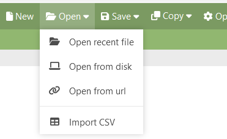
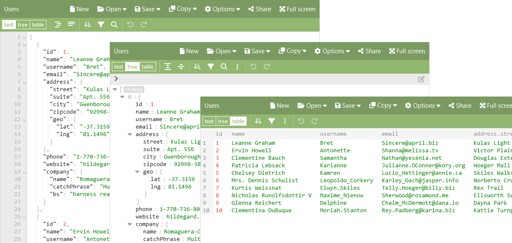
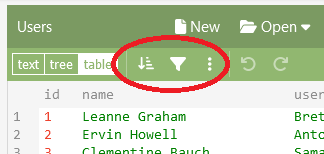
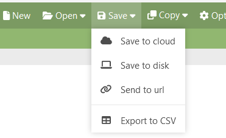
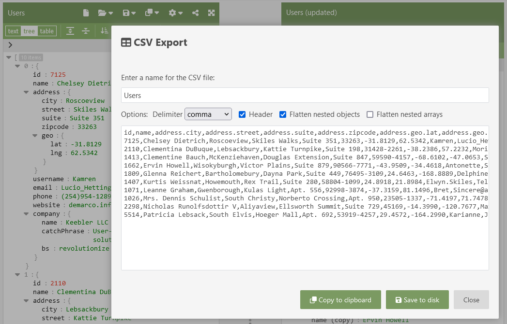

Two of the most popular data formats are JSON and CSV. Both are plain text data formats. JSON (JavaScript Object Notation) is suitable for structured data, whereas CSV (Comma Separated Values) is perfect for tabular data consisting of rows and columns.
You can use the editor below to convert JSON to CSV right away:
This article explains how to use the powerful tool JSON Editor Online to work with CSV and JSON data. Read on to learn more about that.
What does CSV and JSON data look like?
CSV is one of the simplest data formats out there. Rows are separated with a new line character, and fields are separated with a comma. To give you an idea, here is an example of a CSV file:
name,age,city
Chris,23,New York
Emily,19,Atlanta
Joe,32,New York
Kevin,19,Atlanta
Michelle,27,Los Angeles
Robert,45,Manhattan
Sarah,31,New YorkThe first row contains the field names, and the successive rows contain the data. The same data in JSON looks like:
[
{ "name": "Chris", "age": 23, "city": "New York" },
{ "name": "Emily", "age": 19, "city": "Atlanta" },
{ "name": "Joe", "age": 32, "city": "New York" },
{ "name": "Kevin", "age": 19, "city": "Atlanta" },
{ "name": "Michelle", "age": 27, "city": "Los Angeles" },
{ "name": "Robert", "age": 45, "city": "Manhattan" },
{ "name": "Sarah", "age": 31, "city": "New York" }
]In the JSON example you see a lot of duplication of the field names. CSV is a much more compact data format. But CSV is also quite limited. It is suitable for tabular data, but it can for example not represent an object with nested properties. Also, a CSV file cannot be loaded automatically on its own, since you need extra information alongside the file describing how the file is created: what delimiter is used, and whether it contains a header or not. And lastly, CSV does not contain information about the type of the data. Unlike JSON, it does not distinguish text from numbers for example.
In general, JSON is often used as a data format to send data from servers to apps and browsers, since it supports rich data structures. CSV is used by spreadsheet applications, handling tabular data. You can read more about this in the article “JSON vs CSV”.
Working with CSV data using JSON Editor Online
JSON Editor Online is a suitable tool to work with CSV data: it can import and export CSV, and it can display data in a table view. It can smoothly handle large CSV files containing up to something like a million rows. Your typical spreadsheet application doesn’t like that ;).
1. Convert CSV to JSON
You can import a CSV file via the menu “Open”, “Import CSV”. You can also drag and drop your CSV file onto the editor.
Open a file in JSON Editor Online
After you’ve selected a file, a modal will open where you can specify the delimiter and other options, and where you can see a preview:

Good to note here is that the CSV import supports nested objects. If a column name contains a dot, like address.city and address.street, JSON Editor Online can import these fields in a nested object address with two properties, city and street. How the JSON data structure looks can best be seen in the “tree” mode.
2. View CSV data in a table view
After importing, you can view your data in the editor. The editor has three modes: text (plain text JSON), tree (higher level tree view), and table (showing the data as rows and columns).
You can operate on the data, like sorting or filtering your data. In table mode, you can sort on a column by clicking the column header. Via the “Transform” button, you can open the Transform modal where you can query, filter, and transform your data. This is explained in-depth in the article “Easily transform JSON data: a hands-on tutorial”.
3. Convert JSON to CSV
To export JSON to CSV, go to the menu “Save”, “Export to CSV”:
This will open a modal where you can specify properties for the CSV file like header and delimiter, and where you can preview the generated CSV file:
Be careful with the option “Flatten nested arrays”: when your data contains arrays with many items, it will result in a CSV file with a huge amount of columns.
In the end, you can select “Copy to clipboard” or “Save to disk” to output the CSV data.
Most asked questions
Can I convert JSON to CSV?
Yes. You can use an online tool such as JSON Editor Online for this. Read this very article to learn more.
Is a JSON file the same as a CSV?
No. They are two different data formats. They are both readable, plain text formats, but they are very different. CSV is suitable for tabular data, whereas JSON can hold any data structure.
How to convert JSON to CSV in Excel?
Can Excel read JSON? Excel has no built-in support for JSON, but there are converters that you can install in order to support JSON. It is important to note that Excel supports multiple sheets, formulas, charts, and much more, whereas JSON and CSV are much more limited data formats.
Alternatively, instead of handling JSON data in Excel, you can also export your Excel data to CSV and use a tool like JSON Editor Online to convert JSON to CSV or the other way around.
How to convert CSV to JSON programmatically?
There are many libraries out there to convert CSV to JSON. JSON Editor Online uses the excellent JavaScript library csv42, which was specifically developed for JSON Editor Online itself (you can read more about that in the article “I wasn’t going to write a CSV parser, really…”). In the JavaScript ecosystem there are many other good choices, you can search on npm for a suitable CSV parser. Usage of a CSV library is straightforward, this is a single function call like:
import { json2csv } from 'csv42'
const json = [
{ id: 1, name: 'Joe', address: { city: 'New York', street: '1st Ave' } },
{ id: 2, name: 'Sarah', address: { city: 'Manhattan', street: 'Spring street' } }
]
const csv = json2csv(json)
console.log(csv)
// id,name,address.city,address.street
// 1,Joe,New York,1st Ave
// 2,Sarah,Manhattan,Spring streetConclusion about JSON to CSV
Can I convert JSON to CSV? Definitely! Depending on your needs, you can use the mini-editor in this article, or the full-fledged tool JSON Editor Online. With JSON Editor Online you can convert JSON to CSV and the other way around, CSV to JSON. You can view your CSV data in a powerful table view and query, sort, and filter it.
JSON and CSV are two popular data formats. JSON is often used in web applications, and CSV in spreadsheets for data analysis. Being able to convert one to the other enables the best of both worlds.